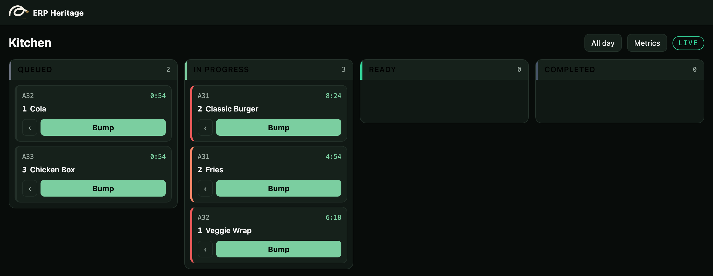
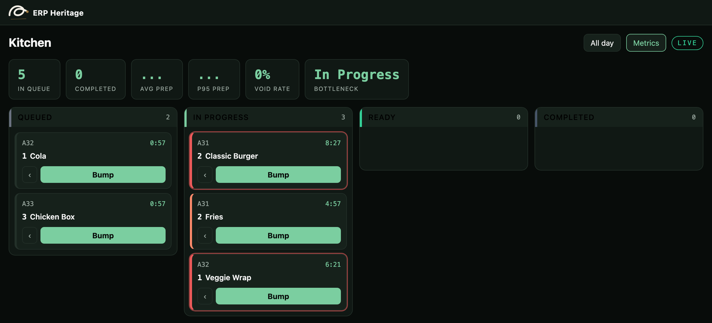
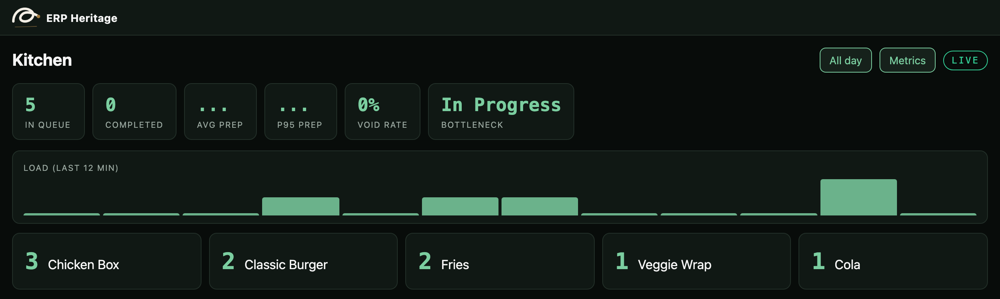
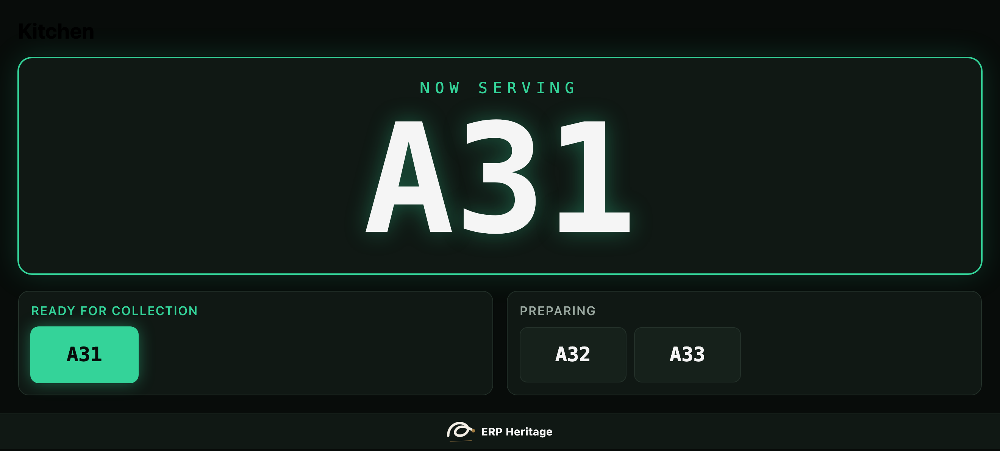

An offline ready kitchen board for Odoo Community Point of Sale, with graduated SLA escalation, an all day view, live analytics and full keyboard or bump bar operation.
The board caches its state and queues bumps through a network drop, then replays them in order, idempotently, on reconnect. No blank screen when the wifi blinks.
A four tier colour ramp per lane with an audible alert, not a single red threshold, and cards reordered by urgency so the oldest ticket is never missed.
An all day view aggregates item counts across every open order, with a minute by minute load heatmap and live queue, prep time and bottleneck metrics.
Orders land in the queue with a sound. Staff bump them down the lanes with a bump bar or the arrow keys, never touching a mouse. As a ticket ages past its lane target the card ramps green to amber to red and chimes, so the oldest order is always obvious. A wrong bump is one keystroke to recall, and every move is logged. When the network blinks the board keeps going and catches up on its own. A glance at the all day view shows the grill is the bottleneck before the queue backs up.
In the shipped code today, each one a place where a cheaper module silently does the wrong thing.
The wifi drops mid service. The board keeps showing the queue and accepts bumps; they sync in order when the link returns, with no double advances.
Two stations bump the same item at the same moment. The server assigned event order decides, so a real bump is never lost to a slower one.
A line is removed then added back. It is matched by a stable line key, so it is not duplicated, and the removed quantity is kept for audit rather than deleted.
A kitchen TV runs for weeks. Off screen cards skip layout and paint, so a board with hundreds of tickets stays smooth.
odoo kitchen display, odoo kds, point of sale kitchen screen, odoo pos order status, kitchen order display, odoo community kds, restaurant kitchen display, order ready screen, bump bar, kitchen display system, pos preparation display

The kitchen boardOrder lanes with live age timers and a four tier SLA colour ramp. Tickets ramp green to amber to red and chime as they age past the lane target.

Live analyticsQueue depth, completed, average and p95 prep time, void rate and the bottleneck lane, refreshed live.

All day viewItem totals across every open order, with a minute by minute load heatmap.

Paired order status screenA public screen shows customers the number being served now, what is ready and what is preparing.
The interface ships translated out of the box. Switch language in Odoo and the fields, menus, and messages follow.
Premium ERP Heritage modules that extend the same stack, each built to the same engineering bar.
Sync timesheet entries from the Employment Hero people and payroll platform into the standard Odoo Timesheets app...
Real-time MRA fiscalisation for Point of Sale receipts in Odoo 19 Community, mapping each paid POS order to the M...
Shared foundation for the ERP Heritage Employment Hero country packs
Bring Employment Hero onboarding workflows, employee goals and contractor flags into Odoo Community as real recor...